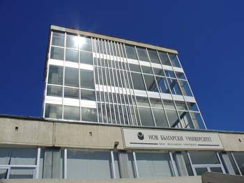

НОВ БЪЛГАРСКИ УНИВЕРСИТЕТ
XVIIІ РЕПУБЛИКАНСКА СТУДЕНТСКА ОЛИМПИАДА ПО ПРОГРАМИРАНЕ
13 - 14 май 2006 г.
| Спонсор: |
Спонсор: |
Спонсор: |
Спонсор: |
::Начало:: ::Програма:: ::Настаняване:: ::Участници:: ::Правила:: ::Среди за програмиране:: ::Класиране:: ::Задачи::

Уважаеми колеги,
На 13 и 14 май
2006 г. в Нов български университет, под патронажа на Ректора на НБУ,
и с активното съдействие на Декана на Бакалавърския факултет доц. Петя
Асенова, ще се проведе ОСЕМНАДЕСЕТА РЕПУБЛИКАНСКА
СТУДЕНТСКА ОЛИМПИАДА ПО ПРОГРАМИРАНЕ.
С настоящето Ви известяваме за състезанието и Ви поканваме да участвате в него. Официалните заявки за участие и предложенията за задачи трябва да постъпят в организационния комитет до 9 май 2006 г. Ще ви бъдем благодарни, ако незабавно съобщите за принципното си намерение да се включите в олимпиадата и броя на вашите отбори на Секретаря на организационния комитет доц. Николай Киров на адрес nkirov@nbu.bg. Предложенията си за задачи изпращайте на Председателя на независимия научен комитет н.с. Емил Келеведжиев (Институт по математика и информатика, БАН) на адрес keleved@math.bas.bg.
Съгласно регламента на олимпиадата (вж. раздела Правила), разноските по пътуването, настаняването и храната са за сметка на учебните заведения, от които са участниците. Домакинът осигурява настаняването на участниците на цени в рамките на командировъчните за страната.
Допълнителна
информация за състезанието, ще можете да
намерите в страниците на този сайт, а в случай че липсва - подсетете ни
на адрес nkirov@nbu.bg.
| София | Председател на организационния комитет: |
| април 2006 г. | (проф. дмн Иван Ланджев, ръководител на Департамент Информатика) |
|
::История:: |
Дизайнът на този сайт е предоставен от колегите от ФМИ на ПУ "Паисий Хилендарски"! |